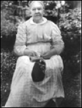
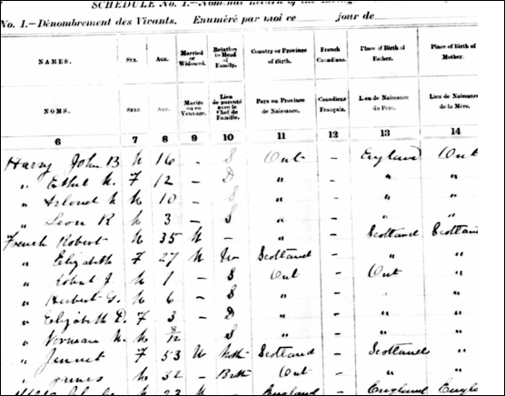

r
French Family Association
The Official Website of the Surname French
High Street, Dumfries, Scotland
Chart #201, James French, 1792
Dumfriesshire, Scotland
This chart updated by Mara French on 12/29/10. Numbers in brackets [ ] show sources and refer to the bibliography at the end of this chart. An asterisk (*) shows continuation of that line. Send any corrections or additions to this chart to marafrench@mindspring.com. Revisions: 2010.
Contents
French Family
who immigrated from England to Markham, Canada
(unrelated)
First Generation
1.1* James French, b. ca. 1792 in Johnstone, Dumfriesshire, Scotland, m. Martha Anderson and had 5 children: George, Samuel, Jean, James, and Elizabeth. Martha Anderson was b. 14 Jul 1793 in Hutton, Dumfriesshire, Scotland, resided in Johnstone, Dumfriesshire, Scotland in the 1851 census when she was 58, and in the 1861 census when she was 68, she lived in Ashkirk, Roxburghshire, Scotland. Another record shows that Martha Anderson was b. 1793, d. 28 Nov 1873, and m. Joseph Baugh, not James French (perhaps there were 2 marriages). The church in Johnstone was built in 1733.
At the Family Search website is a French born ca. 1755 in Kirkmahoe, Dumfries, Scotland and his wife Henrietta Spence who married ca. 1780.
Johnstone, Dumfriesshire, Scotland
1.2 Thomas French, there is possibly a Thomas French was in this line, but his ancestry is not continued here. He m. Agnes Dunwoody or Dinwoody or Dinwoodie in Scotland. Agnes was b. 16 Apr 1803 and her parents were James and Elizabeth or Elspeth (Charters or Charteris) Dinwoodie who married ca. 1796 in Kirkbank, Johnstone, Dumfries, Scotland. Thomas and Agnes French emigrated to Canada ca. 1836-37 and had children born between 1824 and 1846: William, James, Elizabeth, Jane, David, Thomas, Agnes, John, and Janet. Jane was b. in Lochmaben, Dumfries on 10 Feb 1828; Elizabeth was b. 26 mar 1830 in Lochmaben, Dumfries. Jean French was b. 2 Dec 1832 in Lochmaben, Dumfries. All these ancestors can be viewed at http://www.scotlandspeople.gov.uk. These records can also be searched on the IGI – I will do so when I have more time, but if you have the time, please email me the results at marafrench@mindspring.com.
Agnes Dinwoodie is in the 1841 Scotland Census as b. ca. 1806 in Dumfriesshire, Scotland and living in 1841 in Johnstone, Dumfrieshire, aged 35. It mentions that she is married to David Dinwoodie who was b. ca. 1798 in Lochmaben, Dumfireshire. It also mentions her marriage in 1871 in Ontario, Canada, but it does not say whom she married.
Second Generation
Children of James and Martha (Anderson) French, 1.1
2.1 George French, b. 25 Mar 1818 in Johnstone, Dumfriesshire, Scotland, d. 26 Oct 1864 in Markham, Ontario, Canada, and buried at the St. Andrews Presbyterian Church Cemetery in Markham. No known heirs.
St. Andrew’s Presbyterian Church Cemetery, Markham
2.2* Samuel French, b. 30 Jan 1820 in Johnstone, Dumfriesshire, Scotland, m. Agnes Earsman on 4 Jun 1847 in Moffat, Dumfriesshire, Scotland. Agnes was born in Moffat, Dumfrieshire ca. 1821. In the 1851 census, he was living in Lochmaben, Dumfriesshire, Scotland, age 31, and in the 1861 census at age 41, he was residing at 1 Cavendish Place in Glasgow Govan, Lanarkshire, Scotland. Samuel was a journeyman mason. They had 4 children: Martha, Agness, Jane, and James. According to the 1861 Scotland Census, Agness was not living in the household and may have died.
2.3 Jean Margaret French, b. 22 Jan 1822 in Johnstone, Dumfriesshire, Scotland. She m. James Milligan and had 3 children: James F., George, and Thomas Milligan. Ancestry.com also shows a Jean French b. 20 Jan 1801 in Dumfriesshire, Scotland, who died 12 Jun 1844 in Ontario, Canada. The point being here, that several members of the French family from Dumfriesshire, Scotland, immigrated to Ontario, Canada.
2.4* James H. French, b. 9 Aug 1825 in Johnstone, Dumfriesshire,
Scotland, m. Janet Rae prior to 1864, lived in Markham, Ontario, Canada [1].
Both are buried at the St. Andrew’s
Presbyterian Cemetery in Markham, Ontario, Canada [1]. Janet (Jenet) Rae was b. 12 Sep 1836 in East Kilbride,
Scotland, d. 12 Mar 1921 at age 85. She arrived in Canada at age 20. James
remained in Scotland there until the age of 31 when he immigrated to Ontario,
Canada. James lived in York East, Ontario, Canada in 1871 when he was 46. He d.
on 16 Sep 1875, age 50, in Markham, Ontario, Canada. They had 9 children.
 Janet Rae French
2.5 Elizabeth French, b. 15 Oct 1828 in Johnstone, Dumfriesshire, Scotland.
Third Generation
Children of Samuel and Agnes (Earsman) French, 2.2
3.1 Martha French, b. ca. 1849 in Lochmaben, Dumfrieshire, Scotland. In the 1861 census, she was 12 and living at 1 Cavendish Place, Lanarkshire, Glasgow Govan, Scotland with her parents.
3.2 Jane French, b. ca. 1853 in Glasgow, Lanarkshire, Scotland. In the 1861 census, she was 8 and living at 1 Cavendish Place, Lanarkshire, Glasgow Govan, Scotland with her parents.
3.3 James French, b. ca. 1860 in Glasgow, Lanarkshire, Scotland. In the 1861 census, he was 1 and living at 1 Cavendish Place, Lanarkshire, Glasgow Govan, Scotland with his parents.
Children of James H. and Janet (Rae) French, 2.4
3.4* Robert James French, b. 2 Nov 1857 in Pickering, Ontario, Canada, d. 17 Jul 1916 in York, Ontario, Canada. He m. Elizabeth Lambie on 21 Mar 1883 in York, Ontario, Canada, at age 25. She was b. 1861 in Scotland to Janes and Elizabeth (Davidson) Lambie, and d. 17 Nov 1949 in her 89th year.
In the 1891 census of Canada, Robert was married, age 35, living in York East, Markham, Ontario, and states that both his father and mother were born in Scotland. His wife Elizabeth was 27. They were living with Robert J. French (7) (the census shows 1, but it really is a 7), Robert G. French (6), Elizabeth D. French (3), Norman M. French (8/12), Jennet French (53), and James French (32). They were all of the Presbyterian faith, and Robert was a farmer. Robert was born in Ontario and Elizabeth was born in Scotland. Jennet (53) was Robert’s mother who was born in Scotland. James (32) was Robert’s brother, born in Ontario. All children were born in Ontario.

1891 Census of Canada
In the 1871 Census of Canada, Robert was 13 and belonged to the Church of Scotland in York East, Markham, Ontario. He was living with his parents, James (43) and Janet (33), his siblings James (11), Mary (9), Martha (8), Margaret (5), George (3), Jane (5 months), and his wife’s relatives all born in Scotland: Robert Rae (28), Jane Rae (23), and Allen Rae (19).
In the 1901 Census of Canada, Robert was 43, living with his mother Jenet (64), his wife Elizabeth (39), and their children Robert J. (17), Herbert G. (16), Elizabeth O. (13), Norman (10), Gordon (6), and his brother James (41).
In the 1911 Census of Canada, Robert was 53, living with his wife Elizabeth (49), and their children Robert James (27), Herbert Geron (26), Elizabeth Danlon (24), Gordon Marry (16), and Howard Eleanor (6). His mother Jenet had died, and his brother James was no longer living with them. This census is very hard to read; hence, the middle names are not correct on ancestry.com, but they are correct in the next generation.
Robert James French
Family Reunion of the children of James and Janet Rae French ca. 15 Jun 1933 in Agincourt, Ontario, Canada. Scarboro is just south of Agincourt, and north of Lake Ontario in Canada. Both are within the city of Toronto.
This death certificate for Robert James French basically says that he died at 46 Jackman Ave., St. Andrews County. His occupation was a clerk. His parents were James French and Jennet Rae. It gives the name of the physician (E. R. Hastings), then the name of the informant (H. G. French at the same address), and the disease causing his death (Chronic Brights) which he had for 1 ½ years.
3.5 James French, b. 4 Apr 1859 in Pickering, Ontario, Canada, d. 1945 in Ontario, Canada. He m. Elizabeth Ann Watson on 13 Mar 1902, age 42 in York, Ontario, Canada. They had 3 daughters: Jean Isabella, Janet Rae, and Elizabeth Cameron French. James was a farmer. See Census of Canada and James’ whereabouts in his brother Robert’s section above.
Siblings Mary, Martha, Jean, Sam, and James French, and Elizabeth Lambie and James Brechin, ca. 1933 in Agincourt, Ontario, Canada
3.6 Martha French, b. Sep 1860 in Pickering, Ontario, Canada, d. 1949 in Wroxeter, Ontario, Canada. She m. John McNaughton and had 5 children: Jennette, Duncan Stewart, James French, Colin Gordon, and Lillian McNaughton.
3.7 Mary French, b. 5 Dec 1864 in Scarborough, Pickering, Ontario, Canada, d. 27 Jun 1948 in Scarborough, Ontario, Canada. She m. James Smith Thomson and had 5 children: John Richard, Robert James, Janet Rae, Helen Christina, and Harriet Thompson.
4.8 Margaret (Maggie) French, b. 23 Dec 1865 in York, Ontario, Canada, d. 10 Jan 1960 in Winnipeg, Manitobe, Canada. She m. Hert Isaac Thompson on 2 Apr 1896 and had 6 children: Blair, Colin Campbell, Janet Alison, David Alexander, Lorne Chester, and Evelyn Ruth Thomson.
4.9 George French, b. 9 May 1869 in Ontario, Canada.
4.10 Jane Jean (Jen) French, b. 19 Dec 1870 in Markham, Ontario, Canada, d. 20 Aug 1953 in Wyoming, m. James Buchin on 5 Jan 1909 in York, Ontario, Canada, and had 2 children: Ray m. and Rose M. Buchin.
4.11 Samuel French, b. 28 Feb 1873 in Markham, York, Ontario, Canada, d. in Leamington, Ontario, Canada. He m. 12 Sep 1905 in Elgin, Ontario, Canada to an unknown woman.
4.12 Thomas Allen French, b. 27 Jul 1875 in Markham, Ontario, Canada and died several months later on 27 Feb 1876 in Markham, York, Ontario, Canada.
Fourth Generation
Children of Robert James and Elizabeth (Lambie) French, 3.4
4.1 Robert James French, b. 17 Jan 1884 in Markham, York, Ontario, Canada, d. 26 Dec 1974 (age 90) in Mississauga, Ontario, Canada. He m. Margaret Mildred Forfar on 2 Jul 1914 at age 30 in Scarborough, York, Ontario, Canada.
Robert James French and Margaret Mildred Forfar French
 French-Forfar
Wedding, 2 Jul 1914
French-Forfar
Wedding, 2 Jul 1914
Best Man Herbert George French, Groom Robert French, Bride Margaret Forfar, Maid of Honour Agnes Forfar, 2 Jul 1914
4.2 Herbert George French, b. 4 Feb 1885 in Scarborough, York, Ontario, Canada, d. 26 Dec 1974 in Mississauga, Ontario, Canada. He m. Margaret Jane Heron on 2 Feb 1922 at age 37 in York, Ontario, Canada.
4.3 Thomas Allen French, b. 9 Mar 1886 in Markham, York, Ontario, Canada, d. 16 Mar 1886 at 1 week old.
4.4 Elizabeth Davidson French, b. 15 May 1887 in Markham, York, Ontario, Canada, d. 19 Aug 1966 in Toronto, Ontario, Canada, unmarried.
Elizabeth Davidson French
4.5 Norman Murray French, b. 28 Jul 1890 in Markham, York, Ontario, Canada, d. 28 Apr 1913 in York, Ontario, Canada, age 22, unmarried.
Norman Murray French
4.6 Gordon Rae French, b. 17 Dec 1894 in Markham, York, Ontario, Canada, d. 6 Oct 1918 in WWI in Rouen, Seine-Maritime, Haute-Normandie, France. The original tombstone below is at the St. Sever Cemetery Extension in Rouen. The memorial below is in Scarborough.
Gordon Rae French
4.7 Howard Alexander French, b. 26 Jun 1904 in Markham, York, Ontario, Canada, d. 1968 in Windsor, Ontario, Canada.
Howard Alexander French
Bibliography
[1] Barbara Gage, bg@duo-county.com (good in 2009).
[2]  Don Conkright,
dconkright@sbcglobal.net (good in
2009).
Don Conkright,
dconkright@sbcglobal.net (good in
2009).
[3] John B. Waddell, email: johnwaddell@blueyonder.co.uk (good in 2010).
[4] Daphne and Todd, toddanddaphne@sympatico.ca (email good in 2010). Descendent of James French and his wife Janet (Jenet) Rae. This family is not related to Charles French.
[5] John Wright, Barrie, Ontario, email: john.laurie.wright@sympatico.ca.
[6] Karen E. Black, email: Karen.black@sympatico.ca (email good in 2007). Website: http://www3.sympatico.ca/karen.black/Frenches07.html.